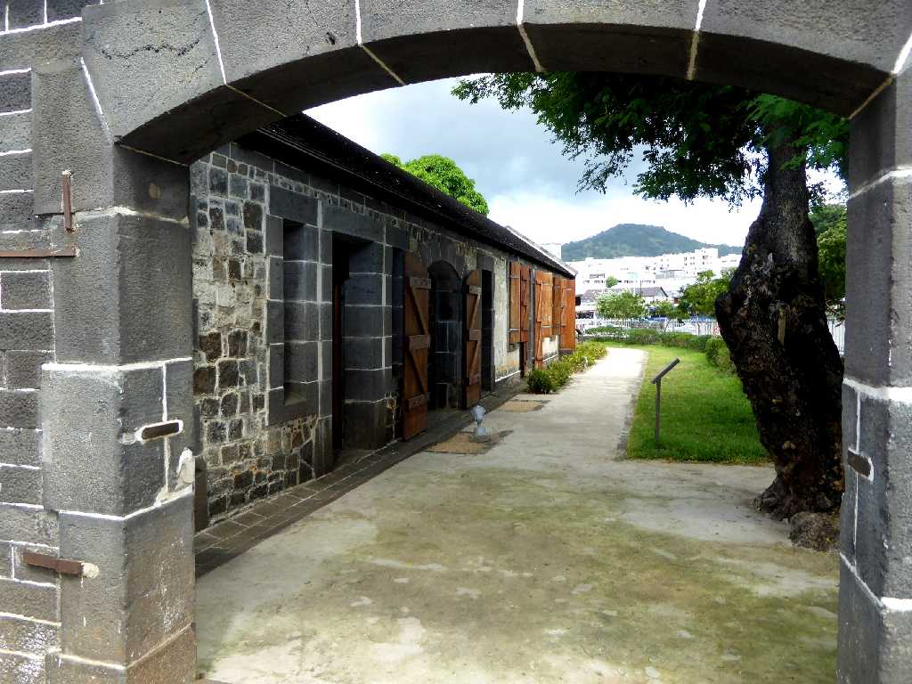
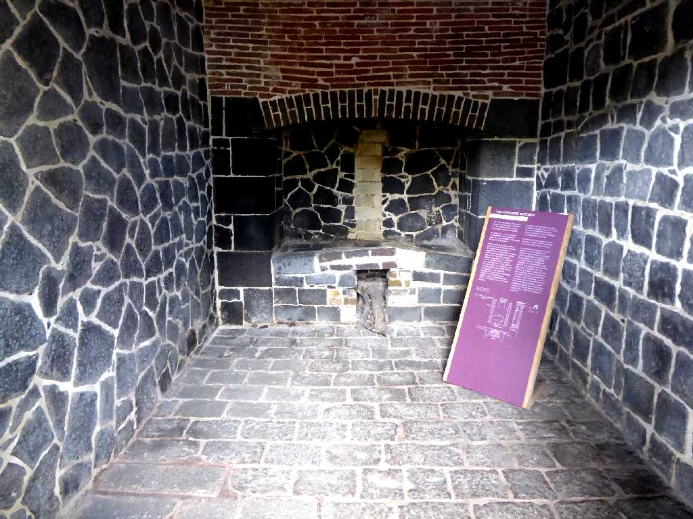
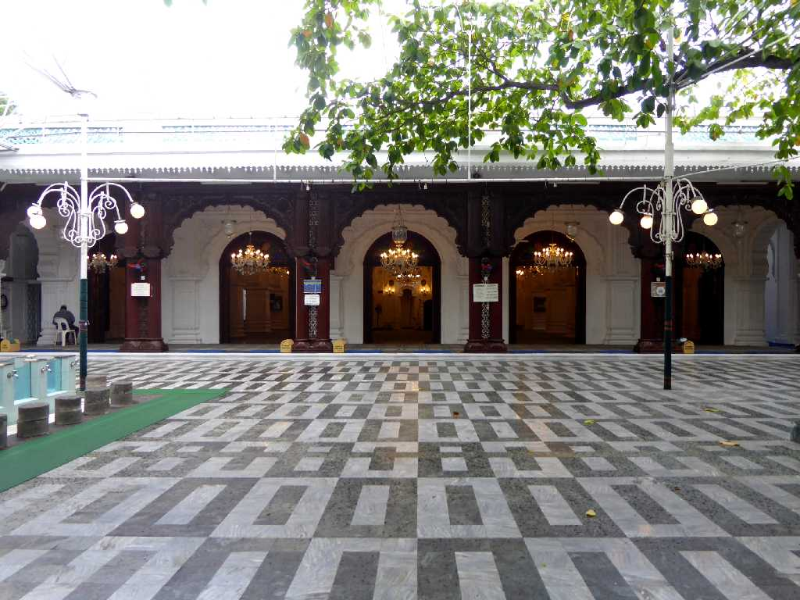
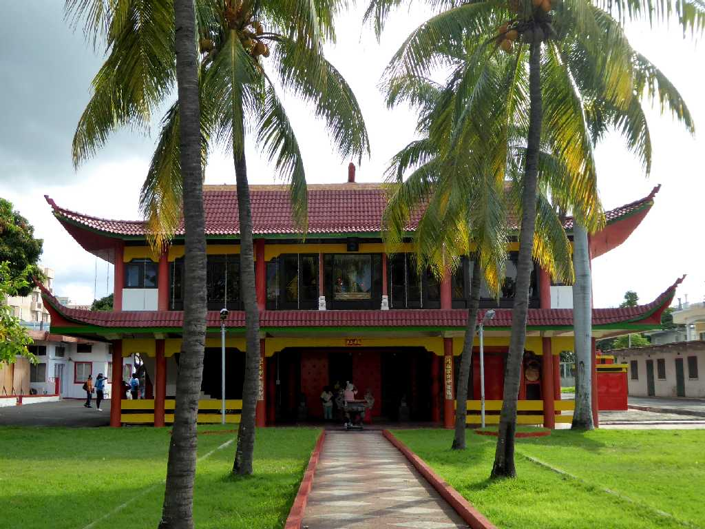
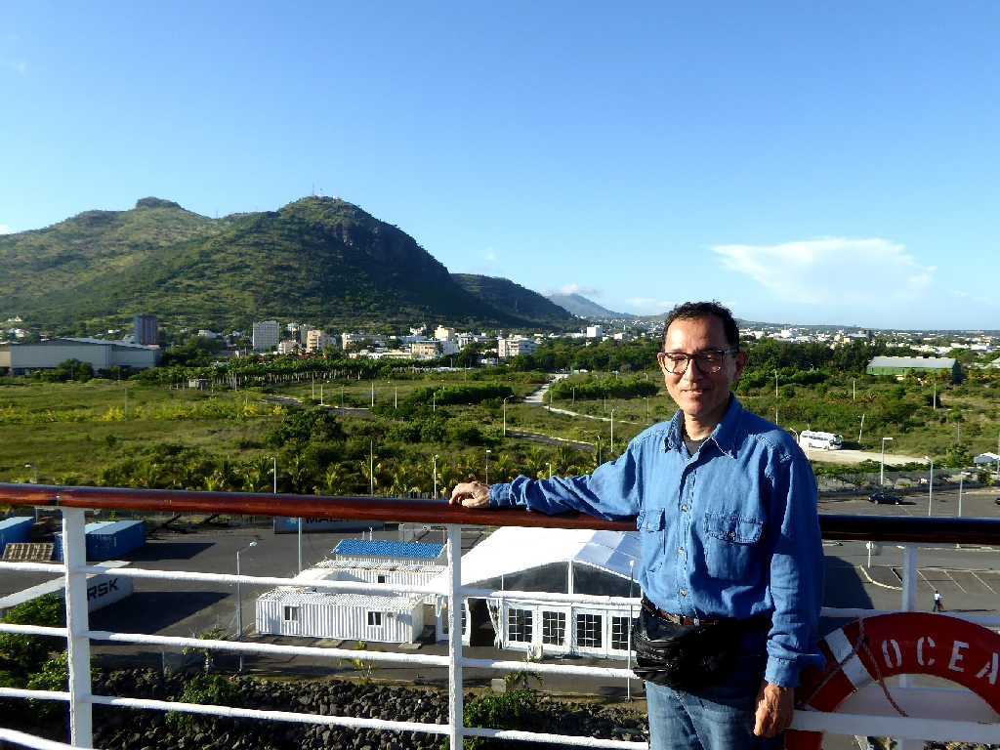

Aapravasi Ghat Port Louis
アープラヴァシ・ガートは１８３４年から１９１０年まで主にインドからの移民受け入れに使われてきた建造物群でモーリシャス初の世界遺産に登録された

Aapravasi Ghat
今でもモーリシャスの人口の約７割がインド系移民の子孫となっている

Jummah Mosque

Kwan Tee Pagoda

January 11 2016 Ocean Dream Port Louis
地球一周の船旅出港２６日目１３,１０８ｋｍ航行しポートルイス港に着岸